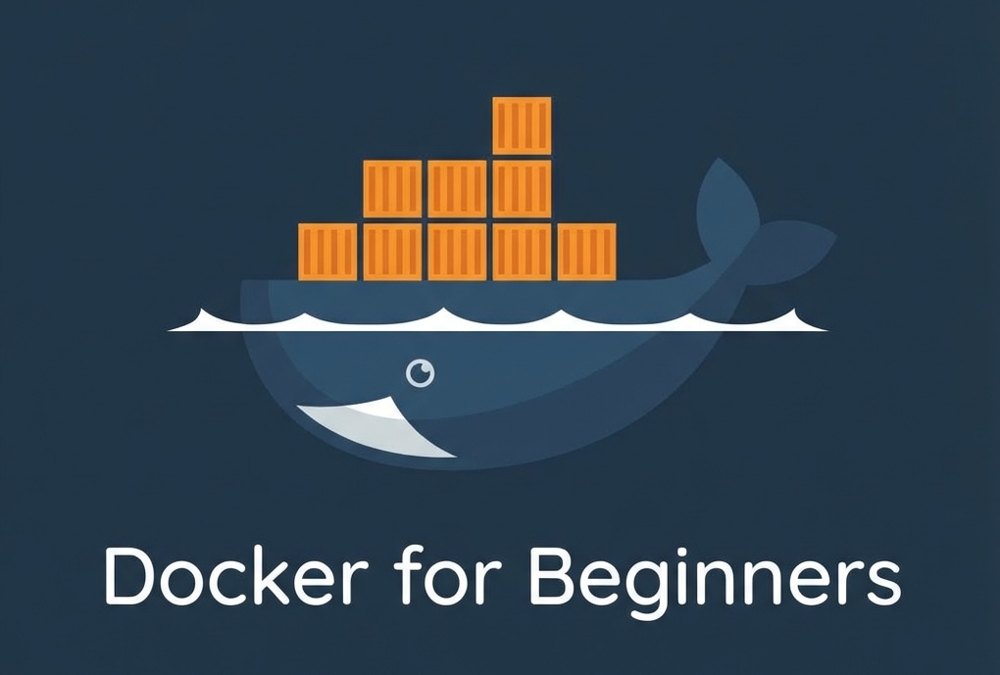
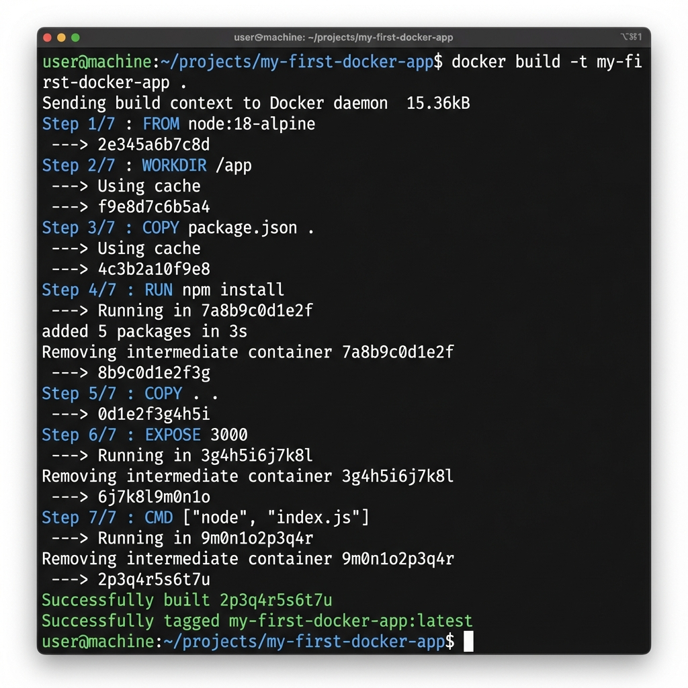
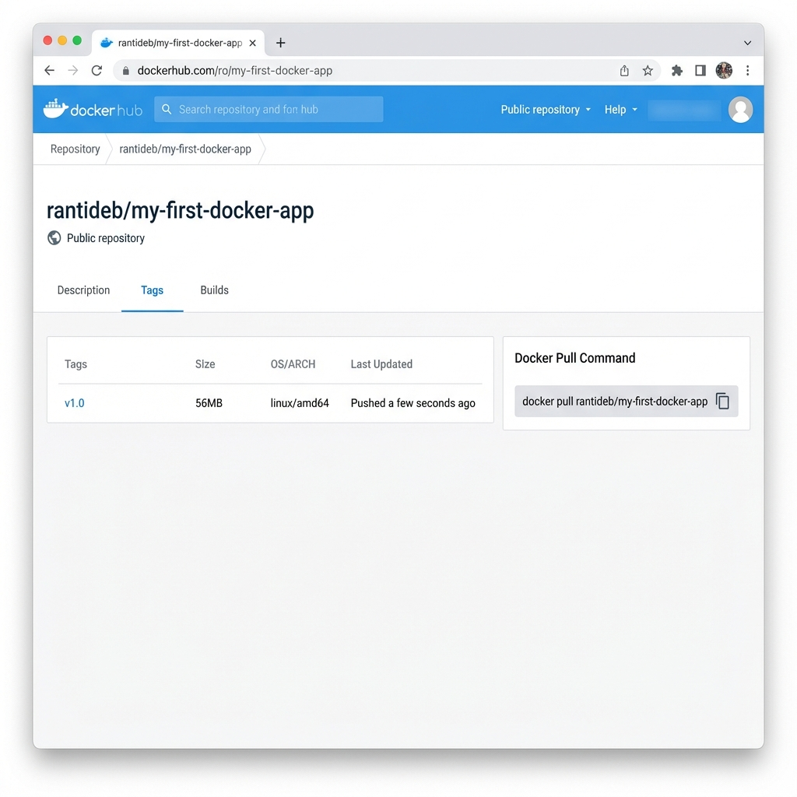

Docker Tutorial for DevOps Beginners (2025): Build a Tiny App and Containerize It from Scratch
You have mastered the basics of Git. You understand the concept of CI/CD. But there is one giant, whale-shaped elephant in the room: Docker. In this Docker tutorial for DevOps beginners, we are going to demystify containerization once and for all.
When I first started my DevOps journey, Docker felt like magic. I would type a command, and suddenly a database would appear. I would type another, and my app was running. But "magic" is dangerous in engineering. If you don't understand how the trick works, you can't fix it when it breaks. And trust me, in production, things will break.
Most tutorials assume you already have an application to work with. But what if you are coming from an infrastructure background and don't have a "Hello World" app ready to go? You end up stuck in "tutorial hell," trying to find code that works before you can even learn the tool you came for.
We are going to change that today. In this comprehensive guide, we will:
- Build a tiny, working web app from scratch (Node.js or Python—your choice).
- Deep dive into Core Docker Concepts so you sound like a senior engineer.
- Write a Dockerfile line-by-line, explaining the "why" behind every instruction.
- Build and Run your container locally, mastering the CLI commands.
- Push to Docker Hub, effectively "publishing" your work for the world.
By the end of this article, you won't just understand Docker for DevOps theory—you will have a tangible project on your resume that proves you can take raw code and turn it into a deployable artifact.
What Is Docker and Why DevOps Engineers Use It
To understand why Docker is revolutionary, we have to look at the dark ages of software deployment (a.k.a. pre-2013). Back then, if you wanted to deploy an application, you had to manually configure a server. You had to install the exact version of Python, the exact libraries, set environment variables, and pray that the OS updates didn't break anything.
Dependencies were hell. Your laptop might have Python 3.9, but the production server has Python 3.6. Your code runs locally but crashes instantly in production. Debugging this was a nightmare.
Enter Docker. Docker solves this by using containers.
Containers vs. Virtual Machines (VMs)
This is the most common interview question for junior DevOps roles, so pay attention.
- Virtual Machines (VMs): A VM is like a digital house. It has its own heavy foundation (Operating System), its own plumbing, and its own furniture. If you want to run three apps using VMs, you need three full Operating Systems. This is heavy, slow to start (minutes), and uses a lot of RAM.
- Containers: A container is like a hotel room. It uses the building's existing foundation and plumbing (the Host OS Kernel) but provides a private, isolated space for the guest (the App). It only contains what the app needs—code and lightweight libraries. This makes them incredibly lightweight, fast to start (milliseconds), and efficient.
Why DevOps engineers take Docker seriously:
- Consistency: Detailed reproducibility. The container works exactly the same on your laptop, your colleague's laptop, and the AWS production server.
- Speed: Containers allow for rapid scaling. Need to handle 10,000 more users? Spin up 50 more containers in seconds.
- Isolation: You can run a Java 8 legacy app next to a Node.js 18 modern app on the same server without them fighting over dependencies.
- Microservices: Docker is the enabler of microservices architecture, where apps are broken down into small, communicating pieces.
In 2025, knowing Docker isn't "nice to have"—it is the standard unit of deployment. If you can't containerize an app, you can't deploy it in a modern cloud environment.
Prerequisites
Before we start coding, ensure you have the following:
- Git and a code editor (I highly recommend VS Code).
- Docker Desktop (Windows/Mac) or Docker Engine (Linux) installed and running. verify this by running `docker --version` in your terminal.
- Basic familiarity with the terminal (cd, ls, mkdir).
- No prior app code required—we will build it together in Step 1.
Step 1: Build a Tiny Demo App from Scratch
You cannot learn to containerize if you don't have something to put in the container. We are going to build a "Minimal Viable App." Choose your path below—Node.js or Python. Both are industry standards.
Option A: Node.js Mini App
Node.js is perfect for microservices. We will use the Express framework to create a web server.
1. Initialize the Project:
mkdir minimal-node-app
cd minimal-node-app
npm init -y # Creates package.json with defaults
npm install express # Installs web server framework2. Create `index.js`:
Create a file named `index.js` and paste this code. This is your entire application logic.
const express = require('express');
const app = express();
const port = 3000;
app.get('/', (req, res) => {
res.send('Hello from Docker! 🐳 \n Node.js Version');
});
app.listen(port, () => {
console.log(`App running at http://localhost:${port}`);
});3. Configure `package.json`:
Open `package.json` and ensure the "scripts" section looks like this. This tells Node how to start your app.
"scripts": {
"start": "node index.js"
}Option B: Python Mini App
Python is the language of AI/ML and scripting. We will use Flask, a lightweight web framework.
1. Initialize the Project:
mkdir minimal-python-app
cd minimal-python-app
# Optional but recommended:
# python3 -m venv venv
# source venv/bin/activate
pip install flask2. Create `app.py`:
Create `app.py`. This simple script listens for requests and returns greeting.
from flask import Flask
app = Flask(__name__)
@app.route('/')
def hello():
return 'Hello from Docker! 🐍 \n Python Version'
if __name__ == '__main__':
# '0.0.0.0' is critical for Docker!
# It allows external access.
app.run(host='0.0.0.0', port=5000)3. Create `requirements.txt`:
This file lists your dependencies so Docker knows what to install.
flaskVerification: Before using Docker, run the app locally to ensure the code works. Run `npm start` or `python app.py`. Visit `localhost:3000` (or 5000). You should see the message. Stop it with `Ctrl+C`.
Step 2: Core Docker Concepts for DevOps Beginners
Before we write the Dockerfile, let's learn the vocabulary. You will use these terms every day as a DevOps engineer.
- Dockerfile
- The Recipe. It's a simple text file with instructions on how to build your application. It says things like "Start with Linux", "Copy my code here", "Install these libraries".
- Image
- The Cake. This is the read-only template created from the Dockerfile. It contains your code, libraries, dependencies, and OS tools all frozen in time. Images are built in "layers".
- Container
- The Slice of Cake you are actually eating. A container is a running instance of an Image. You can start, stop, delete, and restart containers without affecting the original Image.
- Registry
- The Bakery. A remote storage location for your Images. Docker Hub is the most popular public registry (like GitHub for Docker images). Private companies usage registries like AWS ECR or Azure ACR.
The Docker Workflow:
Memorize this flow. It is the lifecycle of every containerized app.
Step 3: Write a Dockerfile for the Tiny App
This is where the magic happens. We need to tell Docker how to build our specific application in a way that is automated. Create a file named just `Dockerfile` (no extension) in your project folder.
We will go through this line-by-line. This is a critical skill for DevOps.
Option A: Node.js Dockerfile
# 1. Base Image
FROM node:18-alpine
# 2. Working Directory
WORKDIR /app
# 3. Copy Dependency Definitions
COPY package.json .
# 4. Install Dependencies
RUN npm install
# 5. Copy Application Code
COPY . .
# 6. Expose Port
EXPOSE 3000
# 7. Startup Command
CMD ["npm", "start"]Option B: Python Dockerfile
# 1. Base Image
FROM python:3.9-slim
# 2. Working Directory
WORKDIR /app
# 3. Copy Dependency Definitions
COPY requirements.txt .
# 4. Install Dependencies
RUN pip install -r requirements.txt
# 5. Copy Application Code
COPY . .
# 6. Expose Port
EXPOSE 5000
# 7. Startup Command
CMD ["python", "app.py"]Detailed Explanation of Instructions
- FROM: Every Dockerfile starts here. We are saying "don't build an Operating System from scratch." Use an official image (Node or Python) maintained by experts. `alpine` and `slim` refer to lightweight versions of Linux to keep our image small.
- WORKDIR: Sets the default folder inside the container. It's like running `mkdir /app` and `cd /app` combined.
- COPY: Moves files from your laptop (Host) to the Container. Notice we copy `package.json`/`requirements.txt` before the rest of the code. This is a best practice called Layer Caching. It means if you change your code but not your dependencies, Docker skips the slow install step next time!
- RUN: Executes a command during the build process. This is where we install libraries. It happens once, when the image is created.
- EXPOSE: Documentation for humans and Docker features. It says "This app listens on this port."
- CMD: The command that runs when the container starts. Unlike `RUN`, this happens every time a container launches.
The Secret Weapon: .dockerignore
Before you build, create a file named `.dockerignore`. It works exactly like `.gitignore`. We want to prevent heavy local folders (like `node_modules` or `venv`) from being copied into the container.
node_modules
venv
.git
__pycache__If you forget this, your build will be slow, and you might accidentally overwrite the container's installed modules with your local ones (which might be for a different OS!).
Step 4: Build and Run the Container Locally
Now that we have our recipe (Dockerfile), let's bake the cake.
1. Build the Image
Run the following command in your terminal. Ensure you are in the directory with your Dockerfile.
docker build -t my-first-docker-app .- `build`: The command to create an image.
- `-t`: Stands for "tag". We are naming our image `my-first-docker-app`.
- `.`: The dot is crucial! It tells Docker to look for the Dockerfile in the current directory.

2. Run the Container
The image is ready. Let's run it. This is where port mapping comes in.
# Syntax: docker run -p [HOST_PORT]:[CONTAINER_PORT] [IMAGE_NAME]
# For Node (Maps laptop port 3000 to container port 3000)
docker run -p 3000:3000 my-first-docker-app
# For Python (Maps laptop port 5000 to container port 5000)
docker run -p 5000:5000 my-first-docker-appIf successful, you will see output saying the app is running. Open your browser to `localhost:3000` (or 5000). You should see your "Hello from Docker!" message.
3. Operating in "Detached" Mode
Currently, your terminal is stuck running the app. Most of the time, we want containers to run in the background. Stop the container with `Ctrl+C` and try this:
docker run -d -p 3000:3000 --name my-running-app my-first-docker-app- `-d`: Detached mode. Runs in background.
- `--name`: Gives the container a friendly name so we can find it later.
4. Managing Containers
Now that it's running in background, how do you see it?
# List running containers
docker ps
# View logs (if something goes wrong)
docker logs my-running-app
# Stop the container
docker stop my-running-app
# Remove the container (cleanup)
docker rm my-running-appStep 5: Tagging and Pushing the Image to a Registry
Right now, the image only exists on your laptop. In a real DevOps workflow, you build an image and push it to a central "Registry" so your servers can pull it down and run it.
We will use Docker Hub, the default public registry.
- Create an Account: Go to hub.docker.com and sign up (it's free).
- Login: In your terminal, run `docker login` and enter your username/password.
- Tag the Image: Docker Hub needs to know where to put the image. We
rename it to match your username.
# Docker Image Naming Convention: [USERNAME]/[REPO]:[TAG] docker tag my-first-docker-app rantideb/my-first-docker-app:v1.0 - Push the Image: Upload it to the cloud.
docker push rantideb/my-first-docker-app:v1.0

The "Aha!" Moment: Delete the image from your local computer (`docker rmi ...`). Then run the `docker run` command again. Docker will automatically notice you don't have the image, pull it from the internet (Docker Hub), and run it.
Docker Best Practices for 2025
As you move from beginner to pro, adopt these habits early.
1. Use Specific Tags, Never `latest`
In production, `latest` is a lie. It changes every time you push. If you deploy `latest` today and it works, and deploy `latest` tomorrow and it breaks, you have no way to know what changed. Always use version numbers (v1.0, v1.1) or Git commit hashes (sha-a1b2c3).
2. Don't Run as Root
By default, Docker containers run as the `root` user. This is a security risk. If a hacker escapes the container, they have root access to your host. In advanced production Dockerfiles, you will see `USER node` or `USER app` to restrict permissions.
3. Keep Images Small (Multi-Stage Builds)
Small images transfer faster and save money. You don't need the entire Go compiler or Node build tools in your final production image—you just need the compiled binary or the runtime. Multi-stage builds allow you to build in one container and copy only the artifacts to a second, tiny container.
4. Never Bake Secrets into Images
Hard-coding passwords or API keys in your Dockerfile is a major security sin. Anyone who downloads your image can see them. Always pass secrets as environment variables (`-e MY_PASSWORD=...`) when running the container, never build them in.
Troubleshooting Common Beginner Errors
127.0.0.1 or
localhost, it will accept connections only from inside the
container.
Docker port mapping won't work. You must configure your app (Flask/Express) to
listen on 0.0.0.0 (all interfaces) to allow external traffic from the
Docker host.
-p
flag: docker run -p 8080:3000 .... Now your app is at
localhost:8080 (while
still listening on 3000 inside).
index.js
on your
laptop, the running container doesn't know. You must rebuild the image (docker
build...) and restart the container (docker run...) to see
changes. For
development, we use "Volume Mounting" to map live files, but that's an advanced
topic!
Real-Life Mini-Project: "Hello from Docker" Web Service
Want to prove to a recruiter you know this? Don't just say "I know Docker." Show them. Complete this project brief and pin it to your GitHub.
Project Brief: The Containerized Microservice
Objective: Create a public repository that demonstrates a fully containerized web application.
Checklist of Criteria:
- Web App created (Node/Python) with a custom API endpoint.
- Dockerfile created using an Official Alpine/Slim base image.
-
.dockerignorefile implemented to exclude junk. - Image built, tagged, and tested locally.
- Image pushed to Docker Hub public registry.
- README.md explains detailed run instructions.
How to Present This on Your Resume
Add Docker to your Skills section. Then, under "Projects", add this:
- Containerized Web Service: Developed a Python/Node.js microservice and containerized it using Docker. Optimized Dockerfile for minimal image size (using Alpine Linux) and published artifacts to Docker Hub registry for simplified deployment.
How Docker Fits into CI/CD
In our previous GitHub Actions Tutorial, we just tested code. In the real world, the "CD" (Delivery) part usually involves Docker.
A typical modern DevOps pipeline looks like this:
- Push Code (to GitHub).
- Test Code (GitHub Actions runs unit tests).
- Build Docker Image (Only IF tests pass).
- Push to Registry (Docker Hub / AWS ECR).
- Deploy (Server pulls the new image and restarts).
This ensures that what is tested is exactly what is deployed. No more drift. No more surprises.
Conclusion: You Have Leveled Up
Congratulations! You have completed this Docker tutorial for DevOps beginners and went from "no app" to a running, containerized application accessible from the cloud. You have bridged the gap between basic coding and professional infrastructure engineering.
You learned how to build an app, containerize it, optimize it with layers and ignore files, and distribute it via a registry. These are the fundamental skills of a Site Reliability Engineer (SRE) or DevOps Engineer.
What is next? Now that you have an image, you need a place to run it. In the next tutorial, we will explore Cloud Fundamentals—learning how to spin up a server on Docker-focused cloud platforms like AWS App Runner or Render to host this container permanently.